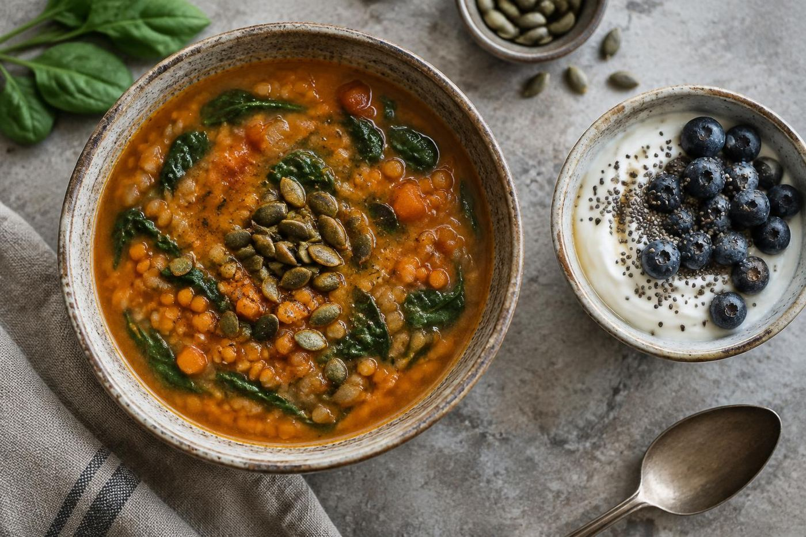

Sports nutrition
Football nutrition leadership at Coastal Carolina.

EmmaLee Marino · MS, RDN, LDN · Coastal Carolina
Supporting football nutrition at Coastal Carolina University with a background in food, nutrition, dietetics, and food safety.
Director of Football Nutrition · Conway, South Carolina
Athlete-focused nutrition
Food and nutrition expertise connected to the demands of collegiate football and sports performance.

EmmaLee Marino is listed as Director of Football Nutrition in Coastal Carolina University’s Intercollegiate Athletics directory. Her LinkedIn profile identifies her as MS, RDN, LDN.
Explore her background ↘Football nutrition leadership at Coastal Carolina.
Food and nutrition education at The University of Alabama.
ServSafe Manager and HACCP credentials listed on LinkedIn.
About EmmaLee
A dietitian working in collegiate football nutrition at Coastal Carolina University, with a food and nutrition background from The University of Alabama.
Coastal Carolina University lists EmmaLee in Intercollegiate Athletics in this role.
Her profile lists attendance from 2018 to 2022 and a BS in Food and Nutrition completed in December 2021.
These credentials appear in EmmaLee’s LinkedIn profile headline.
A career in sports nutrition
Her public profile brings together nutrition education, professional credentials, and collegiate athletics.
Areas of experience
Professional themes supported by the LinkedIn profile and university directory.
Coastal Carolina University lists EmmaLee as Director of Football Nutrition in Intercollegiate Athletics.
View university directory ↗Her profile notes a Bachelor of Science in Food and Nutrition from The University of Alabama.
View EmmaLee’s profile ↗ServSafe Manager and Certified Food Safety HACCP Manager credentials appear on her LinkedIn profile.
View EmmaLee’s profile ↗Education
EmmaLee’s profile lists The University of Alabama from 2018 to 2022 and notes a Bachelor of Science in Food and Nutrition completed in December 2021.
Connect on LinkedInBachelor of Science in Food and Nutrition.
RDN and LDN credentials in profile headline.
ServSafe Manager and HACCP credentials listed.

Professional development
Public activity includes attending the Leadership Excellence and Administrative Development (LEAD) Summit at NCAA headquarters and sharing a Coastal Carolina football sports nutrition fellowship opening.
Professional community
Before her current athletics role, EmmaLee participated in student dietetics leadership at The University of Alabama.
Served from April 2020 to May 2021.
LinkedIn notes membership beginning in August 2019.
Her activity mentions attending the NCAA-hosted summit in Indianapolis.
Experience
EmmaLee is listed in Coastal Carolina University’s Intercollegiate Athletics directory as Director of Football Nutrition.
Intercollegiate Athletics
Director of Football Nutrition · Conway, South Carolina.
View university directory ↗Student leadership · Apr 2020–May 2021
Treasurer at The University of Alabama; managed association funds.
Connect
Visit LinkedIn for profile details and professional updates.
EmmaLee Marino
MS, RDN, LDN · Director of Football Nutrition · Conway, South Carolina
Open LinkedIn profileEmmaLee Marino on LinkedIn ↗Make your own palette
For clear contrast, pair a light page with dark text or a dark page with light text.